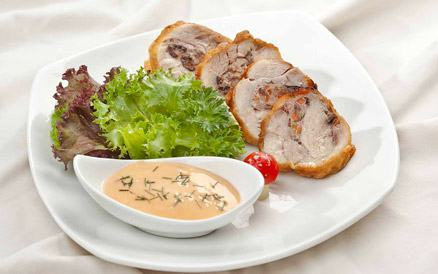

Cùng bắt tay làm thử thôi nào!
- Gà cắt tiết, làm sạch, rút xương, xát muối tiêu phía trong bụng
- Thịt lợn băm nhỏ, gan băm nhỏ, lưỡi lợn băm nhỏ, hành khô băm nhỏ, thịt gà lọc xương băm nhỏ.
- Trộn lẫn tất cả các thứ trên, ướp hạt tiêu, rượu, muối, hành, nước mắm, mì chính, đem nhồi vào bụng gà khâu kín dùng dây quân cho gà chắc đều.
- Đung mỡ nóng già, cho gà vào nồi đổ nước sôi và hầm gà tới khi chín mềm
- Để gà vào tủ lạnh, khi ăn thái khoanh tròn bày vào đĩa, ăn nguội
Thịt gà khi cắt có màu đỏ hồng, điểm trắng, vàng, nâu. Dậy mùi thơm của thịt gà và gia vị